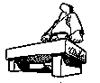
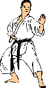
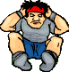
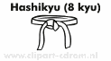

Karate wordt vaak gezien als een agressieve vechtsport, waarbij voornamelijk mannen onder luid geschreeuw op elkaar in hakken en trappen en waar stapels stenen moeten worden doorgeslagen. Niets is minder waar!!! Je hebt al interesse in karate getoond door deze site te bekijken, misschien doe je zelf al karate of weet je wel al een beetje ervan. Mocht je nog niks ervan weten, laat me je dan van de eventuele illusie afhelpen dat karate een 'agressieve mannensport' zou zijn. Maar wat is het dan wel?

Wat is karate?
Karate is inderdaad een vechtsport, maar is nauwelijks te vergelijken met vechtsporten als boksen, kick-boksen of thai-boksen. Het liefst spreek ik dan ook van een 'martial art' ofwel in simpel Nederlands 'oosterse vechtkunst'. Een kunst, want het duurt jaren voordat je het onder de knie hebt èn je hebt een meester nodig om het je bijgebracht te krijgen. Karate is ook pas een sport geworden nadat het in competitieverband is gebracht. Het eigenlijke doel van karate was juist (en is nog steeds) om lichamelijk en geestelijk fit te blijven en de mogelijkheid te hebben jezelf te verdedigen tegen vijanden. Karate is een uitstekende methode om jezelf te verdedigen tegen aanvallen van al dan niet gewapende personen. Het is een dynamische vechtsport waarbij voornamelijk gebruik wordt gemaakt van speciale vuiststoten, trappen, slagtechnieken en in mindere mate werptechnieken (afhankelijk van de stijl van karate). Deze technieken, die methodisch worden aangeleerd, kunnen binnen het kader van een aantal spelregels op sportieve wijze in de dojo op elkaar worden toegepast, waarbij de nadruk ligt op het voorkómen van lichamelijk letsel. Door intensieve training van de aanvals- en verdedigingstechnieken kan het lichaam als een doeltreffend verdedigingswapen worden aangewend. Ten onrechte wordt karate vaak als een agressieve en gevaarlijke sport gekenmerkt. De breektechnieken (Tameshiware) zijn geen wezenlijk onderdeel van het beoefenen van karate. Op demonstraties wordt dit wel vaak vertoond om het publiek te overtuigen van de krachtige technieken.
Waarom karate beoefenen?
Nou, om te beginnen: om zowel lichamelijk als geestelijk fit te blijven. Maar ook omdat het, zoals eerder gezegd, een uitstekende zelfverdedigingsmethode is. Door het beoefenen van karate krijgt men ook meer zelfvertrouwen. Het kan worden beoefend door zowel heren als dames, door jong en oud, en men is bij het oefenen niet altijd afhankelijk van een partner. Karate is erg geschikt als lichaamscultuur, omdat het praktisch alle spiergroepen van het lichaam leert beheersen, zowel van de linker- als de rechterzijde. Karate betekent ook trainen met je geest: je lichaam beter leren kennen, je zelfbeheersing verbeteren, het opbouwen van doorzettingsvermogen en het verbeteren van het concentratievermogen. Algemeen gezegd: Het uiteindelijke doel van karate is geen nederlaag of overwinning, maar de verbetering van de lichamelijke en geestelijke conditie van de beoefenaar.
Wie kan karate beoefenen?
Tja, eigenlijk iedereen! Je hoeft geen Bruce Lee of Chuck Norris te zijn om karate te kunnen doen. Mannen en vrouwen, jong en oud, iedereen kan het doen. Ik heb zelfs eens een demonstratie gezien van een kata die werd uitgevoerd vanaf een stoel, om te demonstreren dat zelfs een rolstoel geen bezwaar hoeft te zijn. Ik hoor ook vaak de smoes "maar ik ben niet lenig" of "ik heb helemaal geen conditie". Als beginner is dat toch logisch? Iedereen is ooit met witte band begonnen, dus jij ook. Langzaamaan groei je wel in een betere conditie en lenigheid, dat hoef je niet al van nature te hebben. Dus een slechte conditie, slappe spieren, of stijfheid zijn geen redenen om niet op karate te gaan. Karate is zeker ook te beoefenen door vrouwen. Hierbij ligt het accent niet zozeer op kracht, maar meer op souplesse van de bewegingen. Door het beoefenen van karate krijgt men ook meer zelfvertrouwen. Het is natuurlijk niet de bedoeling om het karate ooit in de praktijk toe te passen, maar de overtuiging dat je je kan redden geeft toch een prettiger gevoel.
Karate als sport
Als sport heeft karate nog maar sinds kort geschiedenis gemaakt. Toch kennen buitenstaanders dit aspect van karate vaak al van bijvoorbeeld de tv. Op het eerste gezicht ziet karate er gevaarlijk uit, maar aangezien één van de hoofdprincipes is de aanvallen te controleren, kan dit gevaar tot een minimum beperkt worden. Wedstrijdgevechten eisen van de deelnemer kundig gebruik van handen en voeten, afweertechnieken, verplaatsingen, timing, afstandhouden en tactiek.
Wat houdt een karatetraining in?
Warming-up:
De training start altijd met een warming-up, met als doel blessures te vermijden en het lichaam en de geest klaar te maken voor karate-oefeningen. Er wordt gebruik gemaakt van: rek- en lenigheidsoefeningen, coördinatieoefeningen, krachtoefeningen, conditieoefeningen.Kihon (techniektraining):
Om een goede karateka te kunnen worden, moet men de technieken tot in de perfectie trainen. Dikwijls vinden beginnelingen het leren van de basistechnieken vervelend en overbodig. Zonder deze basistraining is het echter onmogelijk de sterke standen, afweren, stoten en trappen te krijgen die nodig zijn voor de training met partner. Tijdens de kihon wordt niet alleen de techniek maar ook het karakter, het concentratie- en het uithoudingsvermogen gesterkt.Kumite (partnertraining):
Tijdens de training met partner worden de getrainde basistechnieken in praktijk gebracht. Andere aspecten worden nu belangrijk, zoals timing, tactiek, gevechtsinzicht, schijnbewegingen en......... controle!Kata en Shihō (traditionele stijloefeningen):
Onder kata verstaan wij een reeks bewegingen uitgevoerd tegen 4 tot 8 denkbeeldige tegenstanders, die uit verschillende richtingen aanvallen. Totaal zijn er ruim 60 kata. De kata vormen als het ware het woordenboek van karate, omdat alle technieken erin voorkomen. Ze zijn daarom ook niet weg te denken uit het moderne karate. Meer lezen op de Kata-pagina.
In sommige karatestijlen worden ook Shihō geoefend. De Shihō lijken soms wat op kata, maar is een eenvoudigere techniek-oefening waarbij enkele afweer-, stoot- en/of traptechnieken worden uitgevoerd en telkens worden herhaald in vier verschillende richtingen (Shihō betekent 'vier richtingen'). Meer lezen op de Shihō-pagina.Karate heeft twee fundamentele kenmerken, enerzijds het inzetten van het volledige lichaam bij uitvoering van een techniek, d.w.z. men tracht zijn totale energie te focussen op het doel, en anderzijds de volledige beheersing van de uitvoering van de techniek. Zonder beide kenmerken kan men misschien wel efficiënte gevechtstechnieken uitvoeren, maar doet men geen karate.
Binnen de karate-training staan ook morele waarden als Moed, Hoffelijkheid, Zelfcontrole en Nederigheid hoog aangeschreven.
Hoe lang duurt het voor je de zwarte band hebt?
De tijd die je nodig hebt om naar de winkel te gaan, de band te pakken en het geld ervoor neer te leggen. Misschien beetje flauw, maar ik wil ermee aangeven dat het hier niet om hoort te gaan. Bedenk goed dat "als je één oog op je doel gericht hebt, je nog maar één oog over hebt om uit te kijken waar je loopt". Dit is ook zo voor de Karate-do (de 'weg van het karate'). Je moet leren zonder enige materiële doelstelling, met geen andere interesse dan zo veel mogelijk te leren over jezelf.

Als je toch graag wilt weten hoe de kleuren van de banden verlopen: in Nederland (in sommige landen verschilt dit!) begin je met wit en gaat dan via geel, oranje, groen, blauw en bruin (3 keer) naar zwarte band. De lage banden heten Kyu (beginnen met 8e of 9e Kyu aftellend tot 1e Kyu) en met zwarte band heb je dan een bepaalde Dan, te beginnen met de 1e Dan (Shodan) tot 9e Dan (t/m 5e Dan kun je examen doen, daarna kom je verder nadat je wordt voorgedragen door anderen. De 10e Dan wordt alleen posthuum uitgereikt). Gewoonlijk kun je ongeveer elk half jaar examen doen als je nog een lage band hebt. Voor hogere banden wordt dit echter steeds langer...
Karatestijlen
Karate is opgesplitst in een aantal stijlen, sommige wat meer bekend, andere wat minder. De Shotokan-stijl is de meest bekende en beoefende vorm van karate. Het is de stijl ontwikkeld door Sensei Gichin Funakoshi, de grondlegger van het moderne karate. Op wereldvlak beoefent ongeveer driekwart van alle karateka's deze stijl. Maar misschien heb je meer interesse in een andere stijl? Ga eens na wat er voor mogelijkheden er zijn bij jou in de buurt.
In ieder geval is deze site opgezet voor Genseiryu, een stijl waarvan gezegd wordt dat die erg dicht bij het oorspronkelijke Okinawa-Karate (het Shuri Te) staat. In ieder geval is het een pure vorm van karate, dat door oprechte meesters ervan wordt geleerd op de manier zoals de oprichter, Sensei Seiken Shukumine, het had bedoeld. Helaas zijn er scholen die het Genseiryu hebben gecombineerd met beginnerskata (Heihan) uit het Shotokan karate om het interessanter te maken voor wedstrijden. Zij noemen zich dan wel Genseiryu (of soms Genseiryu Butokukai), maar volgen niet de oorspronkelijke weg zoals bedoeld door de grondlegger van de stijl.Enkele stijlen met de belangrijkste kenmerken:
- Shotokan: de grootste stijl, kenmerkt zich vooral door de no-contact en semi-contact wedstrijden, ook hun standen zijn erg laag;
- Wadokai of Wado-Ryu ('peaceful way'): een stijl die zich kenmerkt door veel aikido-achtige technieken, waarbij de tegenstander uit balans wordt gebracht of omver wordt geworpen door voetvegen of dergelijke;
- Kyokushinkai: hiervan wordt wel eens gezegd dat het de 'hardste' stijl is binnen karate;
- Genseiryu of Genseikan: een relatief kleine, maar 'pure' stijl. Kenmerkt zich door lage, diepe standen, op-en-neer gaande bewegingen (hoogteverschillen van het bovenlichaam) en Shihō (alhoewel er ook andere stijlen zijn die Shihō toepassen);
- Taido: een nieuwe vechtstijl die ook door Sensei Shukumine is ontwikkeld (rond 1965). Kenmerkt zich door zeer acrobatische manoeuvres als radslagen en zelfs achterwaartse salto's in hun kata. Het wordt dan ook gezien als een 'drie-dimensionale' martial art.
Dit is echter maar een hele kleine greep uit de vele stijlen die er bestaan. Wil je meer weten over de verschillende karatestijlen. Kijk dan eens op deze site: http://www.budoinfo.nl/karatestijlen.htm.
Als je nou de keuze hebt gemaakt om eens een kijkje te nemen bij een karateschool, neem dan een t-shirt en een trainingsbroek mee. Meestal mag je, geheel vrijblijvend, wel een keertje meetrainen en dat is toch veel leuker dan alleen op een bank zitten en toekijken?!?
Wil je nog meer lezen over met name de geschiedenis van karate, ga dan door naar de geschiedenis-pagina!